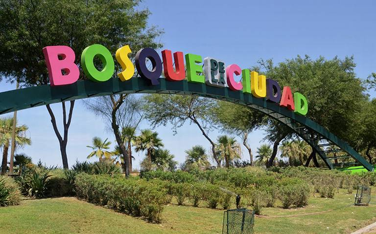
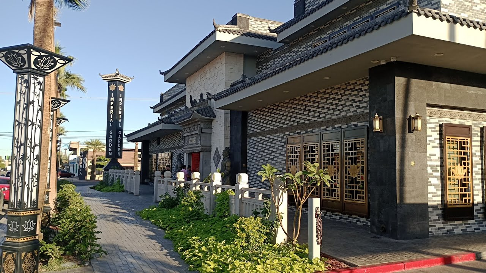
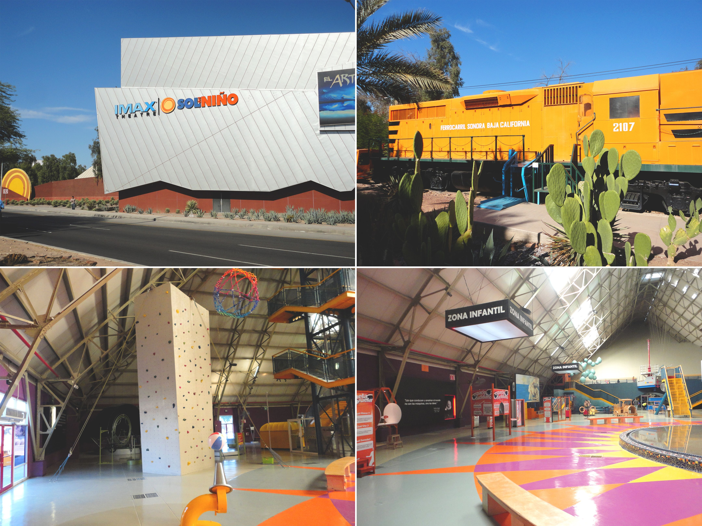
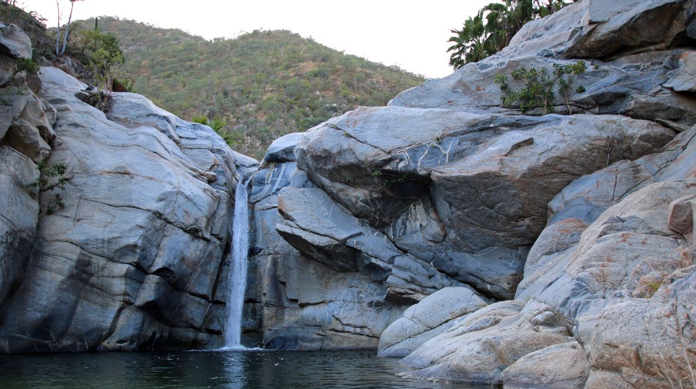

- Bosque de la ciudad
Es un gran parque el cual contiene una gran cantidad de animales
Además de poseer un parque acuático.

(Si deseas más información, presiona la imagen)
- Imperial Garden
Es un restaurante de comida China, es uno de los mejores restaurantes en Mexicali.

(Si deseas más información, presiona la imagen)
- Sol del Niño
Es un museo grande con múltiples actividades.

(Si deseas más información, presiona la imagen)
- Cañón de Guadalupe
Aunque el cañón tiene una función agrícola importante, muchas personas lo visitan
para disfrutar de su entorno natural.

(Si deseas más información, presiona la imagen)